<!DOCTYPE html>
<html lang="ml">
<head>
  <meta charset="utf-8">
  <meta name="viewport" content="width=device-width, initial-scale=1.0">
  <title>Chapter 2 (Pages 27-46) - Class 3 Basic_science</title>
  <style>

:root {
  --bg-color: #fcfcfd;
  --card-bg: #ffffff;
  --text-color: #1e293b;
  --text-muted: #64748b;
  --primary-color: #0284c7;
  --primary-light: #e0f2fe;
  --border-color: #e2e8f0;
  --radius: 10px;
  --shadow: 0 4px 6px -1px rgb(0 0 0 / 0.05), 0 2px 4px -2px rgb(0 0 0 / 0.05);
}

body {
  font-family: -apple-system, BlinkMacSystemFont, "Segoe UI", Roboto, "Noto Sans Malayalam", "Manjari", "Gayathri", sans-serif;
  background-color: var(--bg-color);
  color: var(--text-color);
  line-height: 1.8;
  font-size: 1.1rem;
  margin: 0;
  padding: 0;
}

.container {
  max-width: 860px;
  margin: 0 auto;
  padding: 2.5rem 1.5rem 5rem 1.5rem;
}

header {
  margin-bottom: 2.5rem;
  padding-bottom: 1.5rem;
  border-bottom: 2px solid var(--border-color);
}

.badge-row {
  display: flex;
  gap: 0.5rem;
  margin-bottom: 0.75rem;
  flex-wrap: wrap;
}

.badge {
  display: inline-block;
  font-size: 0.75rem;
  font-weight: 700;
  text-transform: uppercase;
  letter-spacing: 0.05em;
  padding: 0.25rem 0.65rem;
  border-radius: 9999px;
  background: var(--primary-light);
  color: var(--primary-color);
}

.badge-medium {
  background: #fef3c7;
  color: #b45309;
}

.badge-class {
  background: #dcfce7;
  color: #15803d;
}

h1 {
  font-size: 2.1rem;
  font-weight: 800;
  margin: 0.5rem 0 1rem 0;
  line-height: 1.3;
  color: #0f172a;
}

.nav-bar {
  display: flex;
  justify-content: space-between;
  margin: 1.5rem 0;
  font-size: 0.95rem;
  flex-wrap: wrap;
  gap: 0.5rem;
}

.nav-bar a {
  color: var(--primary-color);
  text-decoration: none;
  font-weight: 600;
  padding: 0.5rem 1rem;
  border-radius: var(--radius);
  background: var(--card-bg);
  border: 1px solid var(--border-color);
  transition: all 0.2s ease;
}

.nav-bar a:hover {
  background: var(--primary-light);
  border-color: var(--primary-color);
}

.nav-bar .disabled {
  color: var(--text-muted);
  pointer-events: none;
  border-color: transparent;
  background: transparent;
}

.page-section {
  background: var(--card-bg);
  border: 1px solid var(--border-color);
  border-radius: var(--radius);
  box-shadow: var(--shadow);
  padding: 2rem;
  margin-bottom: 2.5rem;
}

.page-header {
  display: flex;
  align-items: center;
  justify-content: space-between;
  margin-bottom: 1.25rem;
  padding-bottom: 0.5rem;
  border-bottom: 1px dashed var(--border-color);
}

.page-number {
  font-size: 0.8rem;
  font-weight: 700;
  text-transform: uppercase;
  color: var(--text-muted);
  letter-spacing: 0.05em;
}

.page-content p {
  margin: 0 0 1.25rem 0;
  white-space: pre-wrap;
  word-break: break-word;
}

.page-content p:last-child {
  margin-bottom: 0;
}

.diagram-card {
  margin: 2rem 0;
  text-align: center;
  background: #f8fafc;
  border: 1px solid var(--border-color);
  border-radius: var(--radius);
  padding: 1rem;
  overflow: hidden;
}

.diagram-card img {
  max-width: 100%;
  height: auto;
  border-radius: calc(var(--radius) - 4px);
  display: inline-block;
  box-shadow: 0 2px 4px rgba(0,0,0,0.04);
}

.diagram-card figcaption {
  font-size: 0.85rem;
  color: var(--text-muted);
  margin-top: 0.75rem;
  font-weight: 500;
}

footer {
  margin-top: 3rem;
  padding-top: 2rem;
  border-top: 2px solid var(--border-color);
}

  </style>
</head>
<body>
  <div class="container">
    <header>
      <div class="badge-row">
        <span class="badge badge-class">Class 3</span>
        <span class="badge badge-medium">Malayalam Medium</span>
        <span class="badge">Basic science</span>
        <span class="badge">Part 1</span>
      </div>
      <h1>Chapter 2 (Pages 27-46)</h1>
      <div class="nav-bar"><a href="part_1_chapter_01.html">← Chapter 1 (Pages 7-26)</a><a href="index.html">☰ Index</a><a href="part_1_chapter_03.html">Chapter 3 (Pages 47-66) →</a></div>
    </header>
    <main>
      <section class="page-section" id="page-27">
  <div class="page-header"><span class="page-number">Page 27</span></div>
  <figure class="diagram-card" id="fig_ch02_p027_01"><figcaption>Figure fig_ch02_p027_01 (Page 27)</figcaption></figure>
  <figure class="diagram-card" id="fig_ch02_p027_02">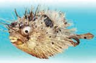<figcaption>Figure fig_ch02_p027_02 (Page 27)</figcaption></figure>
  <figure class="diagram-card" id="fig_ch02_p027_03">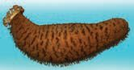<figcaption>Figure fig_ch02_p027_03 (Page 27)</figcaption></figure>
  <figure class="diagram-card" id="fig_ch02_p027_04"><figcaption>Figure fig_ch02_p027_04 (Page 27)</figcaption></figure>
  <figure class="diagram-card" id="fig_ch02_p027_05"><figcaption>Figure fig_ch02_p027_05 (Page 27)</figcaption></figure>
  <figure class="diagram-card" id="fig_ch02_p027_06"><figcaption>Figure fig_ch02_p027_06 (Page 27)</figcaption></figure>
  <figure class="diagram-card" id="fig_ch02_p027_07"><figcaption>Figure fig_ch02_p027_07 (Page 27)</figcaption></figure>
  <figure class="diagram-card" id="fig_ch02_p027_08"><figcaption>Figure fig_ch02_p027_08 (Page 27)</figcaption></figure>
  <figure class="diagram-card" id="fig_ch02_p027_09"><figcaption>Figure fig_ch02_p027_09 (Page 27)</figcaption></figure>
  <figure class="diagram-card" id="fig_ch02_p027_10"><figcaption>Figure fig_ch02_p027_10 (Page 27)</figcaption></figure>
  <figure class="diagram-card" id="fig_ch02_p027_11"><figcaption>Figure fig_ch02_p027_11 (Page 27)</figcaption></figure>
  <figure class="diagram-card" id="fig_ch02_p027_12"><figcaption>Figure fig_ch02_p027_12 (Page 27)</figcaption></figure>
  <figure class="diagram-card" id="fig_ch02_p027_13"><figcaption>Figure fig_ch02_p027_13 (Page 27)</figcaption></figure>
  <figure class="diagram-card" id="fig_ch02_p027_14">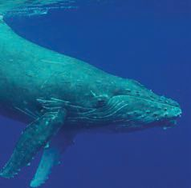<figcaption>Figure fig_ch02_p027_14 (Page 27)</figcaption></figure>
  <figure class="diagram-card" id="fig_ch02_p027_15"><figcaption>Figure fig_ch02_p027_15 (Page 27)</figcaption></figure>
  <div class="page-content">
    <p>s}›¡zœ“›sÇ
ˆ‚ŽcŒœ†sÇs}›¡Ĭų§e›šŒ¢Ƽš? Œœ†s‘¡} ŒšŅŒƼ
ŒǮ¢†sczœ“›s‘¡}c “š–ǙŒš§ s}Æ sŽ›ǫ‚›
¢†ÚšÇsž}‚Æzœ“›sÇs}›Ĭ§n¡‚Ƽǰs}Æzœ“›s¡‘
†›āÇڏ›ǰ?sžĞsšŽŒš›xÅă¡x§‚§m’‚žx› s}Æ
s‘¡}x›ŅāÇ¢†šÚž
}
zœ“›</p>
    <p>s}Æڝ‚›Ž s}ƌǫĈų› s}Æ¡“ǫŽ› s}Æƀ”
gŎc ¢ˆŽsÇhs}Æzœ“›sÇÚ§‹›ÚšÄsšŽ¡ŒŦš›
Ž›Úc?
‹žŒ›› 
¡nǮ“c“›zœ“›š
†œĹ›Œ›cucs}›š§z “
œ“›Ú
ų‚§g‚§ŒœÄ“ÅuĹ›Æ¡ƀĞzœ“›
Ƽ sĚā¡‘ Ƃ–“›Úų
zœ“›š§†œĹ›Œ›cuc</p>
    <p>ˆ“› Œā¡†–ĕšŽc</p>
    <p>n¡‚Ƽǰzœ“›s‘¡} Žžˆā‘š§x›Ņśǫ‚§?
s}š–§ Ú
Œ}ڛg“†›Åƣ›Úž
ŽžˆāÇx›ƀ›ă§e“¡} –ĕšŽ“ce“‚Ž›ƀ›Úž
mƼšzœ“›s‘cp¢Ž “› śš¢š–ĕŽ›Úų‚§?
–ĕšŽŽœ‚›
¡}e}›Ǚš†Ĺ›Æzœ“›s¡‘ ˆĞ›s¡ƀ}Ĺž
}
†}ڝų“</p>
    <p>............................</p>
    <p> ˆšƠ§</p>
    <p>ˆÚų“</p>
    <p>............................</p>
    <p> ŒœÄ</p>
    <p>z</p>
    <p>z</p>
    <p>z</p>
    <p>z</p>
    <p>z</p>
    <p>z</p>
    <p>z</p>
    <p>z</p>
    <p>z</p>
    <p>z</p>
    <p>z</p>
    <p>z</p>
    <p>27</p>
  </div>
</section><section class="page-section" id="page-28">
  <div class="page-header"><span class="page-number">Page 28</span></div>
  <figure class="diagram-card" id="fig_ch02_p028_01"><figcaption>Figure fig_ch02_p028_01 (Page 28)</figcaption></figure>
  <figure class="diagram-card" id="fig_ch02_p028_02"><figcaption>Figure fig_ch02_p028_02 (Page 28)</figcaption></figure>
  <figure class="diagram-card" id="fig_ch02_p028_03"><figcaption>Figure fig_ch02_p028_03 (Page 28)</figcaption></figure>
  <figure class="diagram-card" id="fig_ch02_p028_04"><figcaption>Figure fig_ch02_p028_04 (Page 28)</figcaption></figure>
  <figure class="diagram-card" id="fig_ch02_p028_05"><figcaption>Figure fig_ch02_p028_05 (Page 28)</figcaption></figure>
  <figure class="diagram-card" id="fig_ch02_p028_06"><figcaption>Figure fig_ch02_p028_06 (Page 28)</figcaption></figure>
  <figure class="diagram-card" id="fig_ch02_p028_07"><figcaption>Figure fig_ch02_p028_07 (Page 28)</figcaption></figure>
  <figure class="diagram-card" id="fig_ch02_p028_08"><figcaption>Figure fig_ch02_p028_08 (Page 28)</figcaption></figure>
  <div class="page-content">
    <p>Œ¢Ǯ¡‚ÿ›c Žœ‚››Æ–ĕŽ›Úųzœ“›s‘¢Ĭš?
‚“‘ˆÆăš}›‚}ā›zœ“›s‘¡} –ĕšŽŽœ‚›†›Žœä›Úž
zœ“›s‘¡} ”ŽœŽĹ›
¡źƂ¢‚DZs‚s‘c–ĕšŽŽœ‚›c ƣ
‚
‚ƣ›Æ
m¡Ŧÿ›cŠŰŒ¢Ĭš?
zœ“›</p>
    <p>”ŽœŽĹ›¡ź
–“›¢”•‚
z ˆ›ų›¢Ú§Œ}ښ“ų
†š sšsÇ</p>
    <p>–ĕšŽŽœ‚›
 †}ڝų
z q}ų
z</p>
    <p>‚šš“›¡ź–ĕšŽŽœ‚›†›Žœä›Úž</p>
    <p>gŎśÆpų› ›sc Žœ‚› ‘
s‘›Æ–ĕŽ›Úųzœ“›sdžƣÇ
‚ƭššÚ›ˆĞ› 
s›¢Ĭš?
sž}‚Æzœ“›s‘¡} –ĕšŽŽœ‚›s¡Ĭś¡’‚ž
sžĞsšŽŒš›xÅă¡xƪ§ˆĞ›s “›ˆœsŽ›Úž
q¢Žš zœ“›Úc e‚›¡ź ”ŽœŽĹ›¡źc “–›Úų
xǮˆš}›¡źc
Ƃ¢‚DZs‚sÇچ–Ž›ăǫ –ĕšŽŽœ
‚
‚›šǫ‚§
28</p>
  </div>
</section><section class="page-section" id="page-29">
  <div class="page-header"><span class="page-number">Page 29</span></div>
  <figure class="diagram-card" id="fig_ch02_p029_01">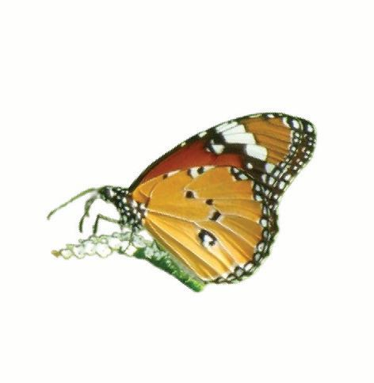<figcaption>Figure fig_ch02_p029_01 (Page 29)</figcaption></figure>
  <figure class="diagram-card" id="fig_ch02_p029_02">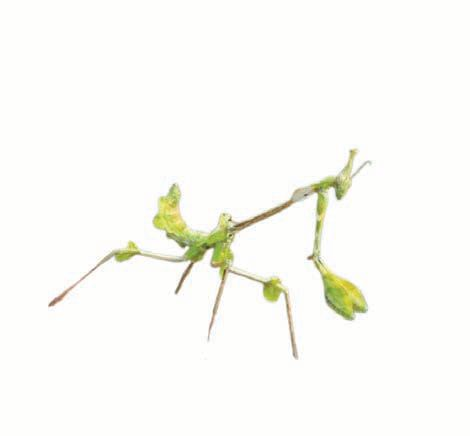<figcaption>Figure fig_ch02_p029_02 (Page 29)</figcaption></figure>
  <figure class="diagram-card" id="fig_ch02_p029_03"><figcaption>Figure fig_ch02_p029_03 (Page 29)</figcaption></figure>
  <div class="page-content">
    <p>f—šŽ“cˆ“› c</p>
    <p>ˆž
Œ ŽÚ‘›¡
¢‚† Œžų
m† š§
›Ú›Ǐ
c</p>
    <p>iƠs‘c
¡xƂš›s‘Œš§
m¡źgǏ‹äc</p>
    <p>¡‚š’sƭÄƂš›c ˆžƠšǮc ˆų‚§“š›ă¢Ƽšg‚
¢ˆš¡ ŒǮzœ“›s‘¡} f—šŽ¢Œ¡‚ų§s¡Ĭś¡’‚ž
zœ“›
ˆ”
sšÚ
f†
eĴšÄ
¢sš’›
ˆŽŦ§
¡ˆšŶšÄ
‚“‘</p>
    <p>ST-253-3-EVS-3(M)VOL-1</p>
    <p>z</p>
    <p>f—šŽc</p>
    <p>g‚›Æn¡‚š¡Úzœ“›s‘š§ –
––DZ‹šuāÇŒšŅcf—šŽ
ŒšÚų‚§?</p>
    <p>
z Œǰ–c ŒšŅc‹ä›Úųzœ“›s¢‘¡‚Ƽǰ?
z</p>
    <p>
––DZš—šŽ“c Œǰ–š—šŽ“c s’›Úų zœ“›s‘¢Ĭš?
n¡‚Ƽǰ?

29</p>
  </div>
</section><section class="page-section" id="page-30">
  <div class="page-header"><span class="page-number">Page 30</span></div>
  <figure class="diagram-card" id="fig_ch02_p030_01"><figcaption>Figure fig_ch02_p030_01 (Page 30)</figcaption></figure>
  <figure class="diagram-card" id="fig_ch02_p030_02"><figcaption>Figure fig_ch02_p030_02 (Page 30)</figcaption></figure>
  <figure class="diagram-card" id="fig_ch02_p030_03"><figcaption>Figure fig_ch02_p030_03 (Page 30)</figcaption></figure>
  <figure class="diagram-card" id="fig_ch02_p030_04"><figcaption>Figure fig_ch02_p030_04 (Page 30)</figcaption></figure>
  <figure class="diagram-card" id="fig_ch02_p030_05"><figcaption>Figure fig_ch02_p030_05 (Page 30)</figcaption></figure>
  <figure class="diagram-card" id="fig_ch02_p030_06">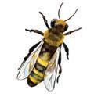<figcaption>Figure fig_ch02_p030_06 (Page 30)</figcaption></figure>
  <figure class="diagram-card" id="fig_ch02_p030_07"><figcaption>Figure fig_ch02_p030_07 (Page 30)</figcaption></figure>
  <figure class="diagram-card" id="fig_ch02_p030_08"><figcaption>Figure fig_ch02_p030_08 (Page 30)</figcaption></figure>
  <figure class="diagram-card" id="fig_ch02_p030_09"><figcaption>Figure fig_ch02_p030_09 (Page 30)</figcaption></figure>
  <figure class="diagram-card" id="fig_ch02_p030_10"><figcaption>Figure fig_ch02_p030_10 (Page 30)</figcaption></figure>
  <figure class="diagram-card" id="fig_ch02_p030_11"><figcaption>Figure fig_ch02_p030_11 (Page 30)</figcaption></figure>
  <div class="page-content">
    <p>––DZ‹šuāÇŒšŅcf—šŽŒšÚų“¡––DZš—šŽ›sÇ
–
mųc Œǰ–c ŒšŅc f—šŽŒšÚų“¡ Œǰ–š—šŽ›sÇ
m ųc
“› ‘› Úǰ   – –DZ ‹š u ā ‘c  Œǰ – “c
f—šŽŒšÚų“š§Œ›NJš—šŽ›sÇ
‚š¡’ †Æs› zœ“›s‘¡} x›Ņś† –ŒœˆĹǫ Ĺ
“ĞśÆ
–žx†sÇچ–Ž›ă§†›c †Æsž
Œǰ–š—šŽ›sÇ
Œ›NJš—šŽ›sÇ
––DZš—šŽ›sÇ</p>
    <p>sž}‚Æzœ“›s‘¡} ¢ˆŽsÇ¢xÅŧˆĞ›s ˆžÅśšÚž
––Dzš—šŽ›sÇ
Ñ ˆ”</p>
    <p>ŒDZ–š—šŽ›sÇ
Ñ –›c—c</p>
    <p>Œ›Njš—šŽ›sÇ
Ñ sšÚ</p>
    <p>•</p>
    <p>•</p>
    <p>•</p>
    <p>•</p>
    <p>•</p>
    <p>•</p>
    <p>•</p>
    <p>•</p>
    <p>•</p>
    <p>•</p>
    <p>•</p>
    <p>•</p>
    <p>•</p>
    <p>•</p>
    <p>•</p>
    <p>zœ“›s‘¡} f—šŽŽœ‚›c ”šŽœŽ›s–“›¢”•‚s‘c ƣ
‚ƣ›Æ
ŠŰŒ¢Ĭš?mŦš§†›ā‘¡} e‹›Ƃšc?m’‚ž
30</p>
  </div>
</section><section class="page-section" id="page-31">
  <div class="page-header"><span class="page-number">Page 31</span></div>
  <figure class="diagram-card" id="fig_ch02_p031_01"><figcaption>Figure fig_ch02_p031_01 (Page 31)</figcaption></figure>
  <figure class="diagram-card" id="fig_ch02_p031_02"><figcaption>Figure fig_ch02_p031_02 (Page 31)</figcaption></figure>
  <figure class="diagram-card" id="fig_ch02_p031_03"><figcaption>Figure fig_ch02_p031_03 (Page 31)</figcaption></figure>
  <figure class="diagram-card" id="fig_ch02_p031_04"><figcaption>Figure fig_ch02_p031_04 (Page 31)</figcaption></figure>
  <figure class="diagram-card" id="fig_ch02_p031_05"><figcaption>Figure fig_ch02_p031_05 (Page 31)</figcaption></figure>
  <figure class="diagram-card" id="fig_ch02_p031_06">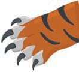<figcaption>Figure fig_ch02_p031_06 (Page 31)</figcaption></figure>
  <figure class="diagram-card" id="fig_ch02_p031_07"><figcaption>Figure fig_ch02_p031_07 (Page 31)</figcaption></figure>
  <figure class="diagram-card" id="fig_ch02_p031_08"><figcaption>Figure fig_ch02_p031_08 (Page 31)</figcaption></figure>
  <figure class="diagram-card" id="fig_ch02_p031_09"><figcaption>Figure fig_ch02_p031_09 (Page 31)</figcaption></figure>
  <figure class="diagram-card" id="fig_ch02_p031_10"><figcaption>Figure fig_ch02_p031_10 (Page 31)</figcaption></figure>
  <div class="page-content">
    <p>x›ŅāÇ¢†šÚžn¡‚š¡Ú ”ŽœŽ‹šuā‘š§hzœ“›sÇÚ§
gŽ¡ ˆ›}›Úš†c f—šŽŒšÚš†c –—šsŒšsų‚§?mā¡†?
z‚šš“§

zˆŽŦ§ 
z‚“‘

z–›c—c

Œǰ–š—šŽ›sÇ sžÅĹ †tāÇ
gŽ¡ sœ’§¡ƀ}ĹšÄƂ¢šz†¡ƀ
}ĹųsžÅŝ ŒžÅă¢›ˆƼ
s‘ˆ¢šu›ă§gŽ¡ s}›ăsœų
Œǰ–š—šŽ› s‘š ˆä› sÇÚ§
‚ā‘¡} ŠŒǫ‚csžÅłŒš
xĬsÇ¡sšĬ§ gŽ¡ ¡sšĹ›
¡}Ĺ§ f—šŽŒšÚšÄ s’›c
Š¢Œ›sšs‘csžÅŝ“‘Ě †tā‘cg“¡
f—šŽ–Ơš„†Ĺ›†§–—š›Úų
––DZ‹šuāÇx“ăŽƩų‚›†§e†¢šzDZŒš
–
v}†š§ ––DZš—šŽ›s‘š zœ“›s‘¡}
ˆƼsÇڝǫ‚§</p>
    <p>ˆ ŽžˆcpŽ
ŽžˆcpŽzœ“›‚c
Œ›ŅŒǮŧs‘›Úsš›Žų
¡x}››Æs¢ g‘cŒĚ ŒĹsÇ
Œ›Ņeƣ¡ “›‘›ăeƣgsÇ
¢†šÚ›
31</p>
  </div>
</section><section class="page-section" id="page-32">
  <div class="page-header"><span class="page-number">Page 32</span></div>
  <figure class="diagram-card" id="fig_ch02_p032_01">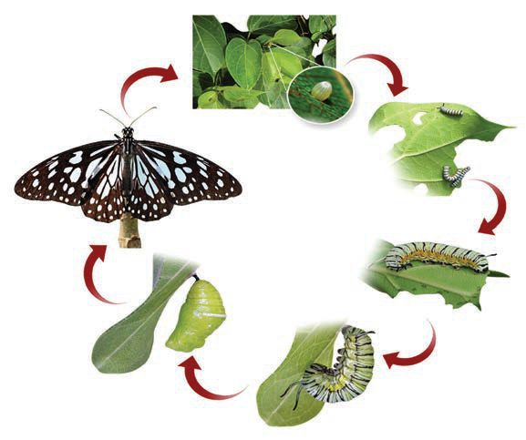<figcaption>Figure fig_ch02_p032_01 (Page 32)</figcaption></figure>
  <figure class="diagram-card" id="fig_ch02_p032_02"><figcaption>Figure fig_ch02_p032_02 (Page 32)</figcaption></figure>
  <div class="page-content">
    <p>Ïg‚x›Ņ”‹Ĺ›¡źŒĞš ¢Œš¢‘Ð
ŒĞ›Æ†›ų§ˆžƠšǮ“›Ž›Ě›āų‚› 
†š›e“ÇsšĹ›Žų
ˆ¢äe“ÇsĬ‚§ˆ’Ú¡‘š§
ÏhŒĞsLjžƠšǮ¢}‚Ƽ¢ƣÐ
Ï¢Œš¢‘hˆ’Ú‘š§ˆžƠšǮs‘š›Œšų‚§g“¡ šÅ“
mųš§ˆų‚§Ð
Œ›ŅÚ§ s‚sŒš› ‚}Åųǫ„›“– ‘
ā‘›Æˆ’“›†Ĭš
ŒšǮāÇe“ÇsšŒ›ÆˆsÅś
x›Ņc †›Žœä›Úž
q¢ŽšvĞś¡źc
¢ˆŽsÇe¢†Ǵ•›ă§
s¡Ĭś¡’‚ž
Ƃ¢‚DZs‚sÇ
‚
m¡źˆŽ›–Žˆ~†
ˆǘsśÆm’‚ž</p>
    <p>ˆDZžƀ
šÅ“
s›¢“ƀ›¡źc ŒǮcgs‘¡}e}››Æ†›Žœä›ăšÆˆǮ›ƀ›}›
㛎›Úų ”‹ŒĞsÇs¡ĬŚÄs’›c</p>
    <p>ˆžƠšǯƩ§
†›c†ÆsDZ</p>
    <p>32</p>
  </div>
</section><section class="page-section" id="page-33">
  <div class="page-header"><span class="page-number">Page 33</span></div>
  <figure class="diagram-card" id="fig_ch02_p033_01"><figcaption>Figure fig_ch02_p033_01 (Page 33)</figcaption></figure>
  <figure class="diagram-card" id="fig_ch02_p033_02"><figcaption>Figure fig_ch02_p033_02 (Page 33)</figcaption></figure>
  <figure class="diagram-card" id="fig_ch02_p033_03"><figcaption>Figure fig_ch02_p033_03 (Page 33)</figcaption></figure>
  <figure class="diagram-card" id="fig_ch02_p033_04"><figcaption>Figure fig_ch02_p033_04 (Page 33)</figcaption></figure>
  <figure class="diagram-card" id="fig_ch02_p033_05"><figcaption>Figure fig_ch02_p033_05 (Page 33)</figcaption></figure>
  <figure class="diagram-card" id="fig_ch02_p033_06"><figcaption>Figure fig_ch02_p033_06 (Page 33)</figcaption></figure>
  <figure class="diagram-card" id="fig_ch02_p033_07"><figcaption>Figure fig_ch02_p033_07 (Page 33)</figcaption></figure>
  <figure class="diagram-card" id="fig_ch02_p033_08">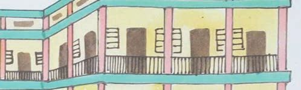<figcaption>Figure fig_ch02_p033_08 (Page 33)</figcaption></figure>
  <figure class="diagram-card" id="fig_ch02_p033_09">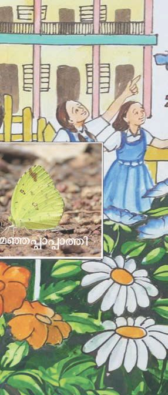<figcaption>Figure fig_ch02_p033_09 (Page 33)</figcaption></figure>
  <figure class="diagram-card" id="fig_ch02_p033_10">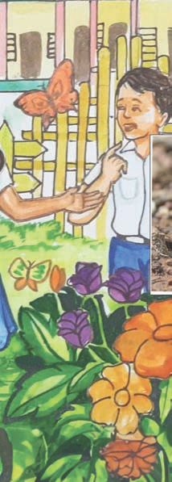<figcaption>Figure fig_ch02_p033_10 (Page 33)</figcaption></figure>
  <figure class="diagram-card" id="fig_ch02_p033_11">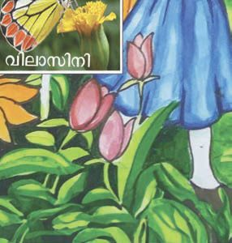<figcaption>Figure fig_ch02_p033_11 (Page 33)</figcaption></figure>
  <figure class="diagram-card" id="fig_ch02_p033_12"><figcaption>Figure fig_ch02_p033_12 (Page 33)</figcaption></figure>
  <figure class="diagram-card" id="fig_ch02_p033_13">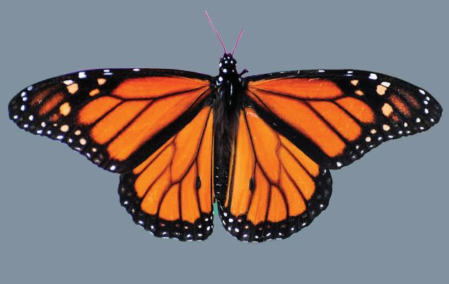<figcaption>Figure fig_ch02_p033_13 (Page 33)</figcaption></figure>
  <figure class="diagram-card" id="fig_ch02_p033_14"><figcaption>Figure fig_ch02_p033_14 (Page 33)</figcaption></figure>
  <div class="page-content">
    <p>h ˆžƠšǮs¡‘ ¢†šÚž ŽĬ x›ss‘›¡c
†›“›†DZš–cpŽ¢ˆš¡¢Ƽ? †›ādž›c†Æs›
ˆžƠšǮ¢Ʃš?
mƼšˆžƠšǮs‘¡}cgŽx›ss‘cpŽ ¢ˆš¡š
¢š? †›ā‘¡} Ž
ˆŽ›–ŽĹǫˆžƠšǮs¡‘ †›Žœä›ă§
s¡Ĭ՝sÇ㚖›Æe“‚Ž›ƀ›Úž</p>
    <p>ˆžƠšǮs¡‘
‚›Ž›ă›ų‚›†š›
q¢Žšg†Ĺ›†c
¢ˆŽsÇ
ˆžƠšǮsÇڝc
†Æs››ĞĬ§
¢ˆ¢Žš ?</p>
  </div>
</section><section class="page-section" id="page-34">
  <div class="page-header"><span class="page-number">Page 34</span></div>
  <figure class="diagram-card" id="fig_ch02_p034_01"><figcaption>Figure fig_ch02_p034_01 (Page 34)</figcaption></figure>
  <figure class="diagram-card" id="fig_ch02_p034_02"><figcaption>Figure fig_ch02_p034_02 (Page 34)</figcaption></figure>
  <figure class="diagram-card" id="fig_ch02_p034_03"><figcaption>Figure fig_ch02_p034_03 (Page 34)</figcaption></figure>
  <figure class="diagram-card" id="fig_ch02_p034_04">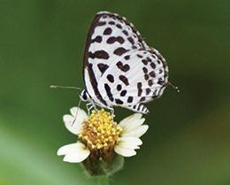<figcaption>Figure fig_ch02_p034_04 (Page 34)</figcaption></figure>
  <figure class="diagram-card" id="fig_ch02_p034_05"><figcaption>Figure fig_ch02_p034_05 (Page 34)</figcaption></figure>
  <figure class="diagram-card" id="fig_ch02_p034_06">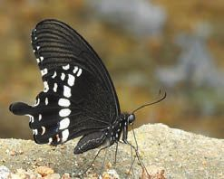<figcaption>Figure fig_ch02_p034_06 (Page 34)</figcaption></figure>
  <figure class="diagram-card" id="fig_ch02_p034_07"><figcaption>Figure fig_ch02_p034_07 (Page 34)</figcaption></figure>
  <figure class="diagram-card" id="fig_ch02_p034_08"><figcaption>Figure fig_ch02_p034_08 (Page 34)</figcaption></figure>
  <figure class="diagram-card" id="fig_ch02_p034_09"><figcaption>Figure fig_ch02_p034_09 (Page 34)</figcaption></figure>
  <figure class="diagram-card" id="fig_ch02_p034_10"><figcaption>Figure fig_ch02_p034_10 (Page 34)</figcaption></figure>
  <figure class="diagram-card" id="fig_ch02_p034_11"><figcaption>Figure fig_ch02_p034_11 (Page 34)</figcaption></figure>
  <figure class="diagram-card" id="fig_ch02_p034_12"><figcaption>Figure fig_ch02_p034_12 (Page 34)</figcaption></figure>
  <figure class="diagram-card" id="fig_ch02_p034_13"><figcaption>Figure fig_ch02_p034_13 (Page 34)</figcaption></figure>
  <div class="page-content">
    <p>uŽ”‹c</p>
    <p>ŠŗŒžŽ›</p>
    <p>¢sŽ‘Ĺ›Æsš¡ƀ}ų“›Æ
nǮ“c“›x›Ņ”‹cuŽ”‹“c
¡x‚§Žŀ†œ›Œš§
¢sŽ‘Ĺ›¡źr¢„DZšu›s”‹c
ŠŗŒžŽ›š§</p>
    <p>Žŀ†œ›</p>
    <p>†ƣ¡} †šĞ›ÆsĬ“Žų x› ˆžƠšǮs‘¡} x›ŅāÇ‚š¡’
†Æs››Ž›Úų</p>
    <p>‚œă›sÄ</p>
    <p>†šĞ¢sšŒš‘›</p>
    <p>†œÚ}“</p>
    <p>xڎ”‹c</p>
    <p>ˆǫ›ÚƠÄ</p>
    <p>†šŽsښ‘›</p>
    <p>†›ā‘¡} Ƃ¢„”ŝǫˆžƠšǮs¡‘ †›Žœä›ă§¢ˆŽsÇs¡Ĭ
ś¡’‚ž
ˆžƠšǮsÇ ŽĬ‚ŽĹ›Æ ––DZā¡‘ fNJ›Úų
ŒĞ › }š†c  f—š Ž ś †c †š Ž sښ ‘› ” ‹c
–š šŽ 
š› ŒĞ›}ų‚§ †šŽsc ˆšÆ mųœ
––DZā‘›š§ g“¡} ˆ’ÚÇ ‹äŒšÚų‚§ h
¡x}›s‘¡} gs‘š§ g“ ˆžƠšǮ 
š›Ú’›ĚšÆ ¢‚Ä
s}›Úų‚§ ¡xƠ Ĺ
ŽĹ› ŒŭšŽc Œ–šŦ ‚}ā›“¡}
ˆžÚ‘›Æ†›ųš§
34</p>
  </div>
</section><section class="page-section" id="page-35">
  <div class="page-header"><span class="page-number">Page 35</span></div>
  <figure class="diagram-card" id="fig_ch02_p035_01">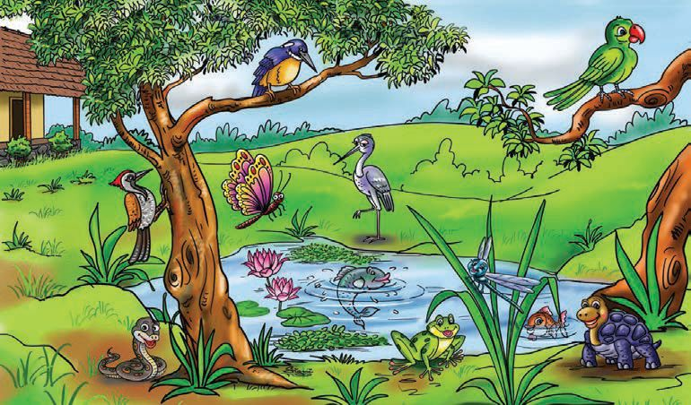<figcaption>Figure fig_ch02_p035_01 (Page 35)</figcaption></figure>
  <div class="page-content">
    <p>“›„DZšĹ› ¡ £z“£““› DZi„DZ Ĺ
š†Ĺ›Æ ÕǑ s› Žœ }c
s› Ú
Ú› s›¢“ƀ§ †šŽsceŽ‘› ‚}ā› ”‹ā¡‘ fsŕ›
ڝų ¡x}›sÇ †Ğˆ›}›ƀ›Úž n¡‚Ƽǰ ”‹ā‘š§ i„DZš†
ś¡Ĺų¡‚ų§†›Žœä›Úž</p>
    <p>mŅŒšŅc £““› DZŒšÅųzœ“›s‘š§†ŒÚ xǮŒǫ‚§
e“m“›¡}¡Ƽǰ“–›Úų ?
 z sš}§
z ˆ’
 z s‘c
z
 z 
z
g“›Ƽš‚ššÆm¡ŦƼǰƂLjā‘šĬš“s?
‹žŒ›mƼš“Åڝce“sš”¡ƀĞ‚š¢Ƽš
zœ“›sÇ “–›Úų h xǮˆš}s¡‘ –cŽä›Úų‚›†š›
†ŒÚ§m¡ŦƼǰ ¡xƭšÄs’›c?
</p>
    <p>z</p>
    <p></p>
    <p>z</p>
    <p></p>
    <p>z</p>
    <p></p>
    <p>z</p>
    <p>Œš›†DZāÇ“›¡ă›š‚›Ž›Ús</p>
    <p>35</p>
  </div>
</section><section class="page-section" id="page-36">
  <div class="page-header"><span class="page-number">Page 36</span></div>
  <figure class="diagram-card" id="fig_ch02_p036_01"><figcaption>Figure fig_ch02_p036_01 (Page 36)</figcaption></figure>
  <figure class="diagram-card" id="fig_ch02_p036_02">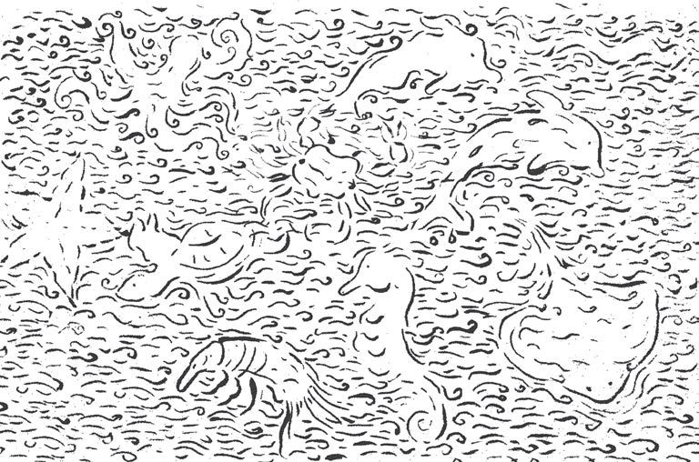<figcaption>Figure fig_ch02_p036_02 (Page 36)</figcaption></figure>
  <div class="page-content">
    <p>“››ŽĹDZ
1. ‚¡ź“œĞ›¡“‘Åŝzœ“›s‘šˆžă¡}cf}›¡źc</p>
    <p>f—šŽŽœ ‚› s‘c ”šŽœ Ž› s–“› ¢”•‚s‘c †› Žœ ä› ă§
ˆĞ› 
s›Æ ¢Žt¡ƀ}Ĺsš§ Œœ† sž}‚Æ “›“ŽāÇ
ˆĞ› 
s›Æ¢xÅڞ
ˆžă</p>
    <p>f}§</p>
    <p> Œǰ–š—šŽc s’›Úų</p>
    <p>z</p>
    <p>z</p>
    <p>sš›ÆsžÅĹ

†tā‘Ĭ§</p>
    <p>z</p>
    <p>––DZš—šŽc s’›Úų</p>
    <p>
sš›ÆsžÅĹ

†tā‘›Ƽ</p>
    <p>z</p>
    <p>z</p>
    <p>z</p>
    <p>z</p>
    <p>z</p>
    <p>z</p>
    <p>z</p>
    <p>2. ‚ų›Ž›Úų x›ŅśÆ p‘›Ě›Ž›Úų s}Æzœ“›s¡‘</p>
    <p>s¡Ĭś¡’‚ž</p>
    <p>36</p>
  </div>
</section><section class="page-section" id="page-37">
  <div class="page-header"><span class="page-number">Page 37</span></div>
  <figure class="diagram-card" id="fig_ch02_p037_01"><figcaption>Figure fig_ch02_p037_01 (Page 37)</figcaption></figure>
  <figure class="diagram-card" id="fig_ch02_p037_02">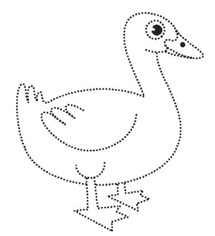<figcaption>Figure fig_ch02_p037_02 (Page 37)</figcaption></figure>
  <div class="page-content">
    <p>3.</p>
    <p></p>
    <p>f—šŽŽœ‚›¡} –“›¢”•‚s‘†–Ž›ă§ ‚šš“§ n‚
“›‹š Ĺ
uĹ›Æ¡ƀ}ų?
‚šš“c ˆŽŦ›¡†¢ƀš¡ǫgŽˆ›}›†š›Žų¡“ÿ›Æ
e‚›†§m¡ŦƼǰ”šŽœŽ›s –“›¢”•‚s‘š›Ž›Úc iĬš“s
“Žă¢xÅڞ</p>
    <p>‚}ÅƂ“ÅņāÇ
1. †ŒÚ xǮŒǫx›Ņ”‹āÇp¢Ž“ƀśc †›Ĺ›
Œǫ“š¢š? †›ā‘¡} Ž
ˆŽ›–ŽĹǫ”‹ā¡‘ †›Žœä›ă§</p>
    <p>–šŒDZā‘c “DZ‚DZš–ā‘c s¡ĬŞ x›ŅāÇ ¢”tŽ›ă§
”‹fƊc †›Åƣ›Úž
2. †›ā‘¡} “›„DZšĹ›†–ŒœˆŒǫ s‘c “Æ sš}§</p>
    <p>ˆÆ¢Œ}§ mų›“›Æ n¡‚ÿ›c pŽ Ǚc –ŭŔ›ă§
e“›¡}ǫ£““› DZŒšÅųzœ“›s¡‘ s¡ĬŞe“›¡}
Ƃ¢‚DZsŒ 
‚
š›sšų n¡‚ÿ›c ŽĬ§zœ“›s‘¡} –“›¢”•
‚sÇiÇ¡ƀ}Ĺ›†›ŽœäÚ›ƀ§‚ƭššÚs</p>
    <p>37</p>
  </div>
</section><section class="page-section" id="page-38">
  <div class="page-header"><span class="page-number">Page 38</span></div>
  <figure class="diagram-card" id="fig_ch02_p038_01">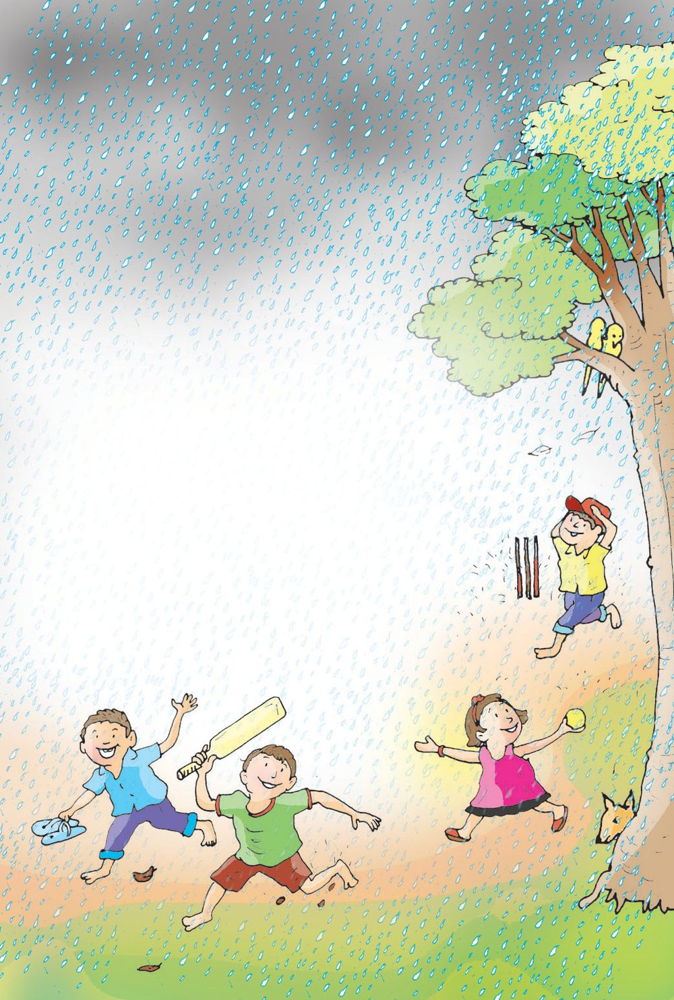<figcaption>Figure fig_ch02_p038_01 (Page 38)</figcaption></figure>
  <figure class="diagram-card" id="fig_ch02_p038_02">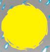<figcaption>Figure fig_ch02_p038_02 (Page 38)</figcaption></figure>
  <figure class="diagram-card" id="fig_ch02_p038_03">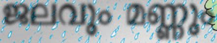<figcaption>Figure fig_ch02_p038_03 (Page 38)</figcaption></figure>
  <figure class="diagram-card" id="fig_ch02_p038_04"><figcaption>Figure fig_ch02_p038_04 (Page 38)</figcaption></figure>
  <figure class="diagram-card" id="fig_ch02_p038_05"><figcaption>Figure fig_ch02_p038_05 (Page 38)</figcaption></figure>
  <figure class="diagram-card" id="fig_ch02_p038_06"><figcaption>Figure fig_ch02_p038_06 (Page 38)</figcaption></figure>
  <figure class="diagram-card" id="fig_ch02_p038_07"><figcaption>Figure fig_ch02_p038_07 (Page 38)</figcaption></figure>
  <figure class="diagram-card" id="fig_ch02_p038_08"><figcaption>Figure fig_ch02_p038_08 (Page 38)</figcaption></figure>
  <figure class="diagram-card" id="fig_ch02_p038_09"><figcaption>Figure fig_ch02_p038_09 (Page 38)</figcaption></figure>
  <div class="page-content">
    <p>3</p>
    <p>z“cŒĴc</p>
    <p>sĞ†csžĞŽcs‘›sÇ‚}ā›
¡ˆ¡Ğųƭš¡xŒ’xš›
Œš†Œ›ŽĬ ¡“ǫ›}›ˆš›
sĞ†csžĞŽc“œĞ›¢¢Úš}›
¡xŒ’ˆ‚Œ’sˆ›¢Œ‘c
fŒ’ˆ›¡ų¡ˆŽŒ’š›
¡ˆŽŒ’Œš›sšÅŒs›Æ†œā›
ŒĴ§s‘›Åŝ ˆžÚÇx›Ž›ă
sĞÄsžĞšÅ¡Úšƀcsž}›
fÅŝ‚›Œ›Åŝ‚s ›Œ›¢‚šc</p>
  </div>
</section><section class="page-section" id="page-39">
  <div class="page-header"><span class="page-number">Page 39</span></div>
  <figure class="diagram-card" id="fig_ch02_p039_01"><figcaption>Figure fig_ch02_p039_01 (Page 39)</figcaption></figure>
  <figure class="diagram-card" id="fig_ch02_p039_02"><figcaption>Figure fig_ch02_p039_02 (Page 39)</figcaption></figure>
  <figure class="diagram-card" id="fig_ch02_p039_03"><figcaption>Figure fig_ch02_p039_03 (Page 39)</figcaption></figure>
  <figure class="diagram-card" id="fig_ch02_p039_04">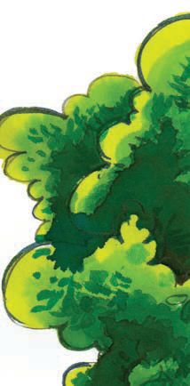<figcaption>Figure fig_ch02_p039_04 (Page 39)</figcaption></figure>
  <figure class="diagram-card" id="fig_ch02_p039_05"><figcaption>Figure fig_ch02_p039_05 (Page 39)</figcaption></figure>
  <figure class="diagram-card" id="fig_ch02_p039_06">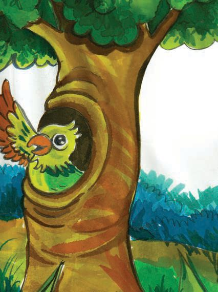<figcaption>Figure fig_ch02_p039_06 (Page 39)</figcaption></figure>
  <figure class="diagram-card" id="fig_ch02_p039_07"><figcaption>Figure fig_ch02_p039_07 (Page 39)</figcaption></figure>
  <figure class="diagram-card" id="fig_ch02_p039_08"><figcaption>Figure fig_ch02_p039_08 (Page 39)</figcaption></figure>
  <figure class="diagram-card" id="fig_ch02_p039_09"><figcaption>Figure fig_ch02_p039_09 (Page 39)</figcaption></figure>
  <figure class="diagram-card" id="fig_ch02_p039_10"><figcaption>Figure fig_ch02_p039_10 (Page 39)</figcaption></figure>
  <figure class="diagram-card" id="fig_ch02_p039_11"><figcaption>Figure fig_ch02_p039_11 (Page 39)</figcaption></figure>
  <figure class="diagram-card" id="fig_ch02_p039_12">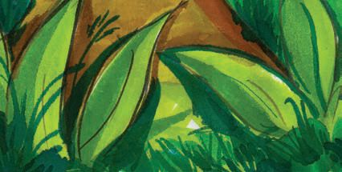<figcaption>Figure fig_ch02_p039_12 (Page 39)</figcaption></figure>
  <figure class="diagram-card" id="fig_ch02_p039_13">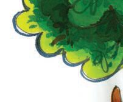<figcaption>Figure fig_ch02_p039_13 (Page 39)</figcaption></figure>
  <div class="page-content">
    <p>Œ’ŝǫ›sÇm¡ź
gs‘›ÆĹĞ›
x›ų›¡Ĺ›Úų‚
sššÄ†Ƽ
Ž–Œš›Žų</p>
    <p>|š†œ
¡ˆšĹ›š‚
¡sšĬ§Œ’
††Ě›Ƽ
†Ƽ‚ƀ§</p>
    <p>ŒĴ§††Ě
s‚›Åų
m†›Ú›†›
ˆ‚†šƠsÇ
“‘Åų“Žc</p>
  </div>
</section><section class="page-section" id="page-40">
  <div class="page-header"><span class="page-number">Page 40</span></div>
  <figure class="diagram-card" id="fig_ch02_p040_01"><figcaption>Figure fig_ch02_p040_01 (Page 40)</figcaption></figure>
  <figure class="diagram-card" id="fig_ch02_p040_02"><figcaption>Figure fig_ch02_p040_02 (Page 40)</figcaption></figure>
  <figure class="diagram-card" id="fig_ch02_p040_03"><figcaption>Figure fig_ch02_p040_03 (Page 40)</figcaption></figure>
  <figure class="diagram-card" id="fig_ch02_p040_04"><figcaption>Figure fig_ch02_p040_04 (Page 40)</figcaption></figure>
  <figure class="diagram-card" id="fig_ch02_p040_05">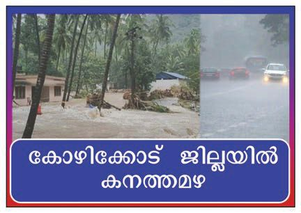<figcaption>Figure fig_ch02_p040_05 (Page 40)</figcaption></figure>
  <figure class="diagram-card" id="fig_ch02_p040_06"><figcaption>Figure fig_ch02_p040_06 (Page 40)</figcaption></figure>
  <div class="page-content">
    <p>Œ’s’›ĚšÆm¡ŦƼǰŒšǮā‘š§†ƣ¡} Ž
ˆŽ›–ŽĹĬš“s?
m¡ź Ž
ˆŽ›–Žˆ~†ˆǘsśÆm’‚ž
†›ā‘¡}Ƃ¢„”ŧmƼš sšĹcŒ’‹›Úš¢Ĭš?
n¡‚š¡Ú Œš–ā‘›š§Œ’‹›Úų‚§?
¢sŽ‘Ĺ›Æs’›Ězž›Æ¡ˆƪŒ’–cŠŰ›ă “šÅĹs‘¡}
‚¡ÚНsÇ¢†šÚž</p>
    <p>Œ’¡}e‘“›ǫ “DZ‚DZš–cmā¡†š“cs¡Ĭś‚§?
Œ’e‘ÚšÄs’›¢Œš?
ŒǮŧ ¡“㛎›Úųp’›Ě ˆšŅā‘›ÆŒ’¡ˆƪs’›¢ƠšÇ
¡“ǫcsšǰ ¡ˆƪŒ’¡}e‘“›¡ź –žx†š§ ˆšŅś¡
¡“ǫc †Æsų‚§ h ¡“ǫc e‘ÚšÄ –š ›Ú¢Œš? Œ’
e‘Úš†ǫpŽiˆsŽc†ŒÚ†›Åƣ›ăš¢š?</p>
    <p>Œ’Œšˆ›†›
Œ’e‘ڝų‚›†ǫ ‘
‘›‚ŒšpŽiˆsŽŒš§Œ’Œšˆ›†›
g‚§mā¡† †›Åƣ›Úǰ?
40</p>
  </div>
</section><section class="page-section" id="page-41">
  <div class="page-header"><span class="page-number">Page 41</span></div>
  <figure class="diagram-card" id="fig_ch02_p041_01"><figcaption>Figure fig_ch02_p041_01 (Page 41)</figcaption></figure>
  <figure class="diagram-card" id="fig_ch02_p041_02"><figcaption>Figure fig_ch02_p041_02 (Page 41)</figcaption></figure>
  <figure class="diagram-card" id="fig_ch02_p041_03">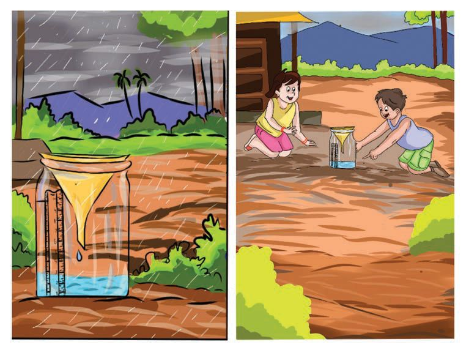<figcaption>Figure fig_ch02_p041_03 (Page 41)</figcaption></figure>
  <figure class="diagram-card" id="fig_ch02_p041_04"><figcaption>Figure fig_ch02_p041_04 (Page 41)</figcaption></figure>
  <div class="page-content">
    <p>f“”DzŒš–šŒ÷›sÇ
 x›Ƽsƀ›
z
‰Æ ¢xšÅƀ§
z ¡Ǘ›Æ
z</p>
    <p>†›Åƣ›Úų“› c
x›Ƽsƀ››ÆpŽ¡Ǘ›Æx›Ņś¢‚¢ˆš¡ ¢xÅŧ
iƀ›ă“Ʃs x›Ƽsƀ›¡} Œs‘›Æ  ‰Æ “Ʃs
sƀ› ‚Ǡš ǙĹ§ iƀ›ă“Ʃs mƼš „›“–“c
pŽ†›DŽ›‚–ŒĹ§ z†›Žƀ§ ¢Žt¡ƀ}Ĺs
†</p>
    <p>sžĞsš¡Žšų›ă§Œ’Œšˆ›†›†›Åƣ›ă§q¢Žš „›“–¡ĹcŒ’‘ų§
‚š¡’‚ų›Ž›ÚųˆĞ›sˆžÅśšÚž
‚œ‚›
‹›ăŒ’</p>
    <p>41</p>
  </div>
</section><section class="page-section" id="page-42">
  <div class="page-header"><span class="page-number">Page 42</span></div>
  <figure class="diagram-card" id="fig_ch02_p042_01"><figcaption>Figure fig_ch02_p042_01 (Page 42)</figcaption></figure>
  <figure class="diagram-card" id="fig_ch02_p042_02"><figcaption>Figure fig_ch02_p042_02 (Page 42)</figcaption></figure>
  <figure class="diagram-card" id="fig_ch02_p042_03"><figcaption>Figure fig_ch02_p042_03 (Page 42)</figcaption></figure>
  <figure class="diagram-card" id="fig_ch02_p042_04">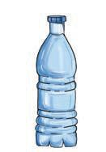<figcaption>Figure fig_ch02_p042_04 (Page 42)</figcaption></figure>
  <figure class="diagram-card" id="fig_ch02_p042_05"><figcaption>Figure fig_ch02_p042_05 (Page 42)</figcaption></figure>
  <figure class="diagram-card" id="fig_ch02_p042_06"><figcaption>Figure fig_ch02_p042_06 (Page 42)</figcaption></figure>
  <figure class="diagram-card" id="fig_ch02_p042_07"><figcaption>Figure fig_ch02_p042_07 (Page 42)</figcaption></figure>
  <figure class="diagram-card" id="fig_ch02_p042_08">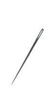<figcaption>Figure fig_ch02_p042_08 (Page 42)</figcaption></figure>
  <figure class="diagram-card" id="fig_ch02_p042_09"><figcaption>Figure fig_ch02_p042_09 (Page 42)</figcaption></figure>
  <div class="page-content">
    <p>q¢Žš „›“–“c ‹›ăŒ’
¡}e‘“§ãšǠ§ Œ››¡ ŠǫǮ›Ä
}
¢ŠšÅ›Æ¢Žt¡ƀ}ĹŒ¢Ƽš
nǮ“c sž}‚ÆŒ’‹›ă‚§ n‚„›“–Œš§?
nǮ“c s“§ ‹›ă¢‚š?
‚œ¡ŽŒ’‹›ÚšĹ „›“–Œ¢Ĭš?</p>
    <p>m†›ÚcpŽŒ’Œšˆ›†›
pŽŒ’Œšˆ›†›“œĞ›Æ‚ƭššÚž
q¢Žš „›“–“c ‹›ă Œ’¡} e‘“§ m¡ź Ž
ˆŽ›–Žˆ~†
ˆǘsśÆ¢Žt¡ƀ}Ĺ›s¡Ĭ՝sÇe“‚Ž›ƀ›Úž</p>
    <p>Œ’¡“Ǭcm“›¢}Ú§ ?
Œ’¡ˆƪs’›ĚšÆŒ’¡“ǫcm¢āšĞš§ ¢ˆšsų‚§?
†Œ¡ÚšŽƂ“Åņc ¡xƪ¢†šÚǰ
x›Ņc 1</p>
    <p>iā›ŒĴ§ †›ă§
ā
e}›‹šuŧpŽ“”ŧ
„Ǵ Œ
šŽŒ›Ğƃšǡ›s§ sƀ›</p>
    <p>x›Ņc 2</p>
    <p>ƃšǡ›s§
sƀ›</p>
    <p>¡“ǫc</p>
    <p>–žx›</p>
    <p>x›Ņc 2-¡ “ǘÚÇ iˆ¢šu›ă§ x›Ņc 1-¡ ˆšŅś¡
ŒĴ›¢Ú§ Œ’¡ˆƭ›Úž
ŒĴ›Æ“œ¡“ǫś†§mŦ–c‹“›ă?
Ĵ
s¡Ĭ՝sÇe“‚Ž›ƀ›Úscm¡ź Ž
ˆŽ›–Žˆ~†ˆǘsś
¡’‚sc ¡xƭž
x›Ņ“c “Žă¢xÅڞ
42</p>
  </div>
</section><section class="page-section" id="page-43">
  <div class="page-header"><span class="page-number">Page 43</span></div>
  <figure class="diagram-card" id="fig_ch02_p043_01"><figcaption>Figure fig_ch02_p043_01 (Page 43)</figcaption></figure>
  <figure class="diagram-card" id="fig_ch02_p043_02"><figcaption>Figure fig_ch02_p043_02 (Page 43)</figcaption></figure>
  <figure class="diagram-card" id="fig_ch02_p043_03"><figcaption>Figure fig_ch02_p043_03 (Page 43)</figcaption></figure>
  <figure class="diagram-card" id="fig_ch02_p043_04"><figcaption>Figure fig_ch02_p043_04 (Page 43)</figcaption></figure>
  <figure class="diagram-card" id="fig_ch02_p043_05"><figcaption>Figure fig_ch02_p043_05 (Page 43)</figcaption></figure>
  <figure class="diagram-card" id="fig_ch02_p043_06"><figcaption>Figure fig_ch02_p043_06 (Page 43)</figcaption></figure>
  <figure class="diagram-card" id="fig_ch02_p043_07"><figcaption>Figure fig_ch02_p043_07 (Page 43)</figcaption></figure>
  <figure class="diagram-card" id="fig_ch02_p043_08"><figcaption>Figure fig_ch02_p043_08 (Page 43)</figcaption></figure>
  <div class="page-content">
    <p>z¢ǟš‚–sÇ
¡ź “œĞ›¡
s›Ǯ›Æ
†›¡
¡“ǫŒĬ§</p>
    <p>|ā‘¡} “œĞ›Æ
s’Æڛš§
e‚›¡Ņ
¡“ǫŒ¡Ĭų§ 
sššÄ
s’››Ƽ</p>
    <p>¡‚š}››¡
s‘Ĺ›Æ
†›ųš§Օ›Úc
“œĞ›¡ f“”DZś
†Œǫ zc
|āÇÚ§
‹›Úų‚§</p>
    <p>†›ā‘¡} “œ ‘
}s‘›Æm“›¡}†›ųš§ zc
‹›Úų¡‚ų§m’‚ž</p>
    <p>–Žcuc ¢s›c
p Žš Ç Ú§ † } ų¢ˆšsšÄ  Œš Ņc
“ƀŒǫ ‚Ž ÿ ā Ç †› Å ƣ› ă§
e‚›ž¡} ‹žuŋz¡Ĺ ˆ¢ĹÚ§
¡sšĬ“Žų–c“› š†Œš§ –Žcu
mų› ¡ƀ}ų ‚§  sš – Å¢uš §
z›Ƽ›c sŁš}sś¡ź x›
‹šuā‘›Œš§ –ŽcusÇiǫ‚§</p>
    <p>–Žcu
¢s › m ųšÆ  s› Å  m ųš§
eŃc “› ŒŽĹ}›sÇ ‚Žų§
‹žŒ››¢Ú§ ‚š’§Ĺ›š§ 
¢s›sÇ
†›Åƣ›Ús¢†Ž›Ğ§ ˆšŅāÇ¡sšĬ§
¡“ǫc ¢sšŽ›¡}Úš“ųŅf’¢Œ
¢s›s Ç ÚĬš “ž  ¢sŽ‘Ĺ› ¡
ˆf„›“š–›“›‹šuā‘cg¢ƀš’c

¢s›sÇiˆ¢šu›ÚųĬ§</p>
    <p>43</p>
    <p>¢s›</p>
  </div>
</section><section class="page-section" id="page-44">
  <div class="page-header"><span class="page-number">Page 44</span></div>
  <figure class="diagram-card" id="fig_ch02_p044_01">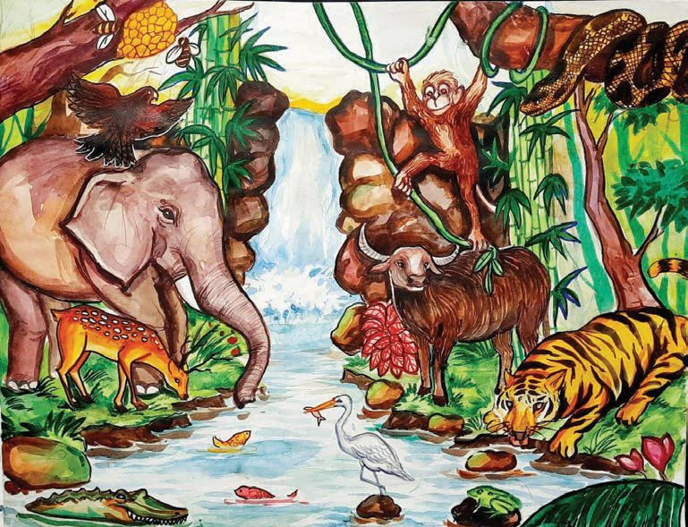<figcaption>Figure fig_ch02_p044_01 (Page 44)</figcaption></figure>
  <figure class="diagram-card" id="fig_ch02_p044_02">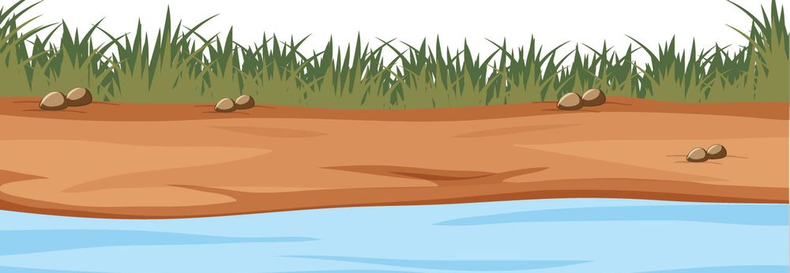<figcaption>Figure fig_ch02_p044_02 (Page 44)</figcaption></figure>
  <div class="page-content">
    <p>zœ“zc</p>
    <p>x›Ņc †›Žœä›Úž ˆ’›¡ zcm¡ŦƼǰf“”DZāÇښ§
hzœ“›sÇiˆ¢šu›Úų‚§?
ˆĞ›sˆžÅśšÚž
Ğ
zœ“›</p>
    <p>zc¡sšĬǬf“”DzāÇ
Ǭ</p>
    <p>z</p>
    <p>ŒœÄ</p>
    <p>z</p>
    <p>z</p>
    <p>f†</p>
    <p>z</p>
    <p>z</p>
    <p>z</p>
    <p>z</p>
    <p>z</p>
    <p>z</p>
    <p>z</p>
    <p>z</p>
    <p>z</p>
    <p>s¡Ĭ՝sÇe“‚Ž›ƀ›Úž
†ǰm¡ŦƼǰf“”DZāÇښ§ zciˆ¢šu›Úų‚§?
44</p>
  </div>
</section><section class="page-section" id="page-45">
  <div class="page-header"><span class="page-number">Page 45</span></div>
  <figure class="diagram-card" id="fig_ch02_p045_01"><figcaption>Figure fig_ch02_p045_01 (Page 45)</figcaption></figure>
  <figure class="diagram-card" id="fig_ch02_p045_02">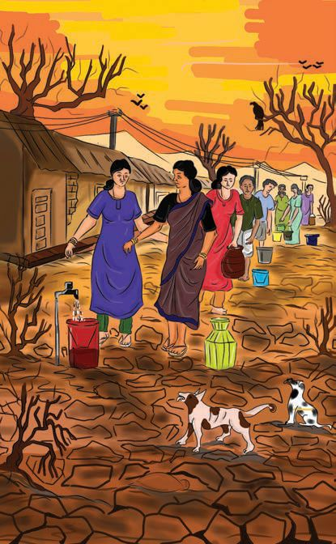<figcaption>Figure fig_ch02_p045_02 (Page 45)</figcaption></figure>
  <figure class="diagram-card" id="fig_ch02_p045_03"><figcaption>Figure fig_ch02_p045_03 (Page 45)</figcaption></figure>
  <figure class="diagram-card" id="fig_ch02_p045_04">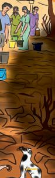<figcaption>Figure fig_ch02_p045_04 (Page 45)</figcaption></figure>
  <figure class="diagram-card" id="fig_ch02_p045_05"><figcaption>Figure fig_ch02_p045_05 (Page 45)</figcaption></figure>
  <figure class="diagram-card" id="fig_ch02_p045_06"><figcaption>Figure fig_ch02_p045_06 (Page 45)</figcaption></figure>
  <figure class="diagram-card" id="fig_ch02_p045_07">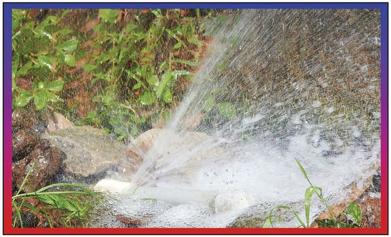<figcaption>Figure fig_ch02_p045_07 (Page 45)</figcaption></figure>
  <figure class="diagram-card" id="fig_ch02_p045_08">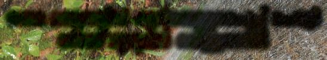<figcaption>Figure fig_ch02_p045_08 (Page 45)</figcaption></figure>
  <figure class="diagram-card" id="fig_ch02_p045_09"><figcaption>Figure fig_ch02_p045_09 (Page 45)</figcaption></figure>
  <div class="page-content">
    <p>f“”DZś†zc
‹›Úš‚ššÆŒ†•DZÅڝc
ŒǮzœ“zšāÇڝc
m¡ŦƼǰ –c‹“›Úc?
xÅă¡xƪ§ m’‚ž</p>
    <p>ˆš’šÚŽ¢‚</p>
    <p>†uŽŒ DzśÆs}›¡“Ǭ£ˆƀ§¡ˆšĞ›
¢š§Œ’“Ä¡“ǬśÆ</p>
    <p>45</p>
  </div>
</section><section class="page-section" id="page-46">
  <div class="page-header"><span class="page-number">Page 46</span></div>
  <figure class="diagram-card" id="fig_ch02_p046_01"><figcaption>Figure fig_ch02_p046_01 (Page 46)</figcaption></figure>
  <figure class="diagram-card" id="fig_ch02_p046_02">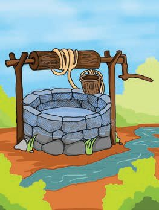<figcaption>Figure fig_ch02_p046_02 (Page 46)</figcaption></figure>
  <figure class="diagram-card" id="fig_ch02_p046_03"><figcaption>Figure fig_ch02_p046_03 (Page 46)</figcaption></figure>
  <figure class="diagram-card" id="fig_ch02_p046_04"><figcaption>Figure fig_ch02_p046_04 (Page 46)</figcaption></figure>
  <div class="page-content">
    <p>gŎśǫ “šÅĹsdž›āÇsĬ›ĞĬš“Œ¢Ƽš.
zc ˆš’šsųŒǮ–ŭŋāÇn¡‚Ƽš¡Œų§ m’‚ž
z
z
z</p>
    <p>zc ˆš’šsš‚›Ž›ÚšÄ m¡ŦƼǰ sšŽDZāÇ †ŒÚ§ ¡xƭšÄ
s’›c?
 }šƀsÇe†š“”DZŒš›‚ų›}Ž‚§</p>
    <p>z
z
z
z
z</p>
    <p>z”ŗœsŽc
ŒĴ›Æ“œ§ ā
Ĵ
sā›Œ’¡“ǫc s›Ǯ›¢¡Úŝ¢ƠšÇ
¡‚‘›Ě“Žų‚§ mā¡†š§#</p>
    <p>Œ’¡“ǫś¡ź pŽ‹šucŒĴ›ž¡} ‚š¢’Ú§ eŽ›ă›āų
g‚§i“š›s›Ǯ›cŒǮz¢Ǟš‚Ǡs‘› c
cmś¢ă
Žų ŒĴ›ž¡} eŽ›ă›ā¢Ơš’š§ ¡“ǫc ¡‚‘›Ě
“Žų‚§</p>
    <p>46</p>
  </div>
</section>
    </main>
    <footer>
      <div class="nav-bar"><a href="part_1_chapter_01.html">← Chapter 1 (Pages 7-26)</a><a href="index.html">☰ Index</a><a href="part_1_chapter_03.html">Chapter 3 (Pages 47-66) →</a></div>
      <p style="text-align: center; font-size: 0.85rem; color: var(--text-muted); margin-top: 2rem;">
        Kerala SCERT Class 3 Basic_science (Malayalam Medium) - Extracted Study Text
      </p>
    </footer>
  </div>
</body>
</html>
